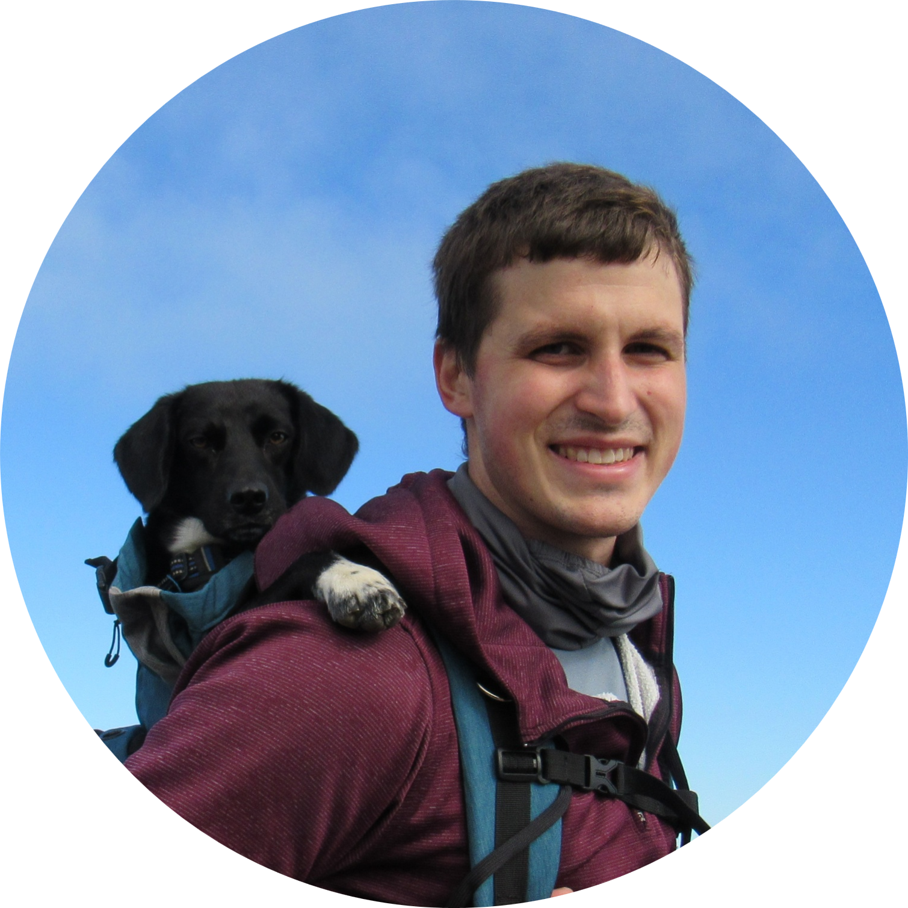
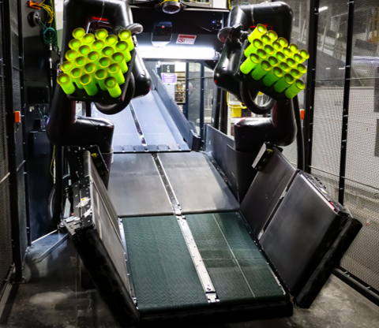
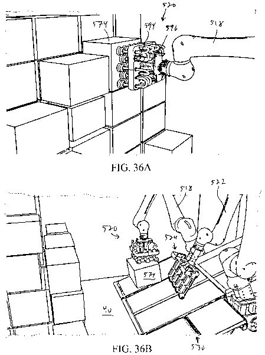
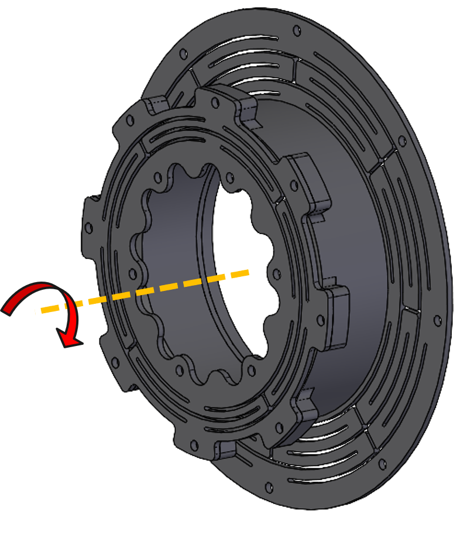
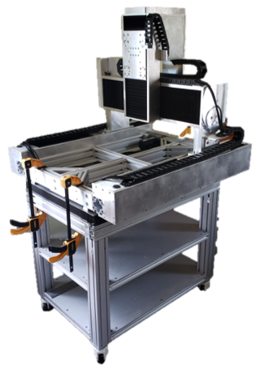
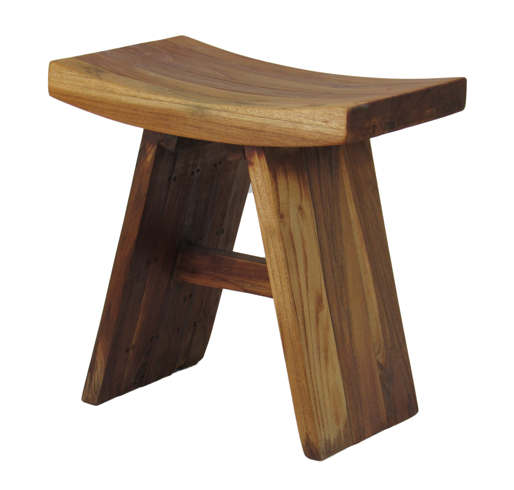

Berkshire Grey / SoftBank Robotics
Scoop — System Architecture
System architecture, conveyor layout, package scooping, and chassis packaging for a robotic trailer-unloading system.

CONOR O'NEILPrincipal Mechanical EngineerTampa, FLOver 12 years of developing robotic, electromechanical, and optical systems from early concepts through detailed design, manufacturing, and production.

System architecture, conveyor layout, package scooping, and chassis packaging for a robotic trailer-unloading system.

Compliant gripping and high-flow vacuum-control concepts for handling irregular packages in unstructured trailers.

5-DoF lens-focus development and imager-alignment tolerance analysis for automated vision sensor manufacturing.
I’ve been designing and making things for as long as I can remember — from childhood racing toboggans, go-karts, and other overly ambitious contraptions to CNC machines, automated furniture, and woodworking projects I’m still building today.
That curiosity is why I became an engineer in the first place. I genuinely enjoy figuring out how things work, learning new tools and technologies, and finding better ways to turn an idea into something real.

Enclosed portable CNC machine with onboard electronics and a structure designed for minimal deflection.
Adjustable heavy-duty motorized workbench with an integrated high-performance CAD workstation.

Furniture, laser engraving, and all sorts of other projects.
Open to full-time, part-time & contract opportunities.
me@conoroneil.com View ResumeLinkedIn